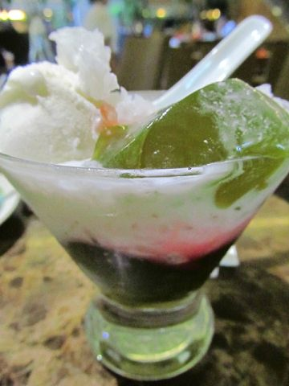
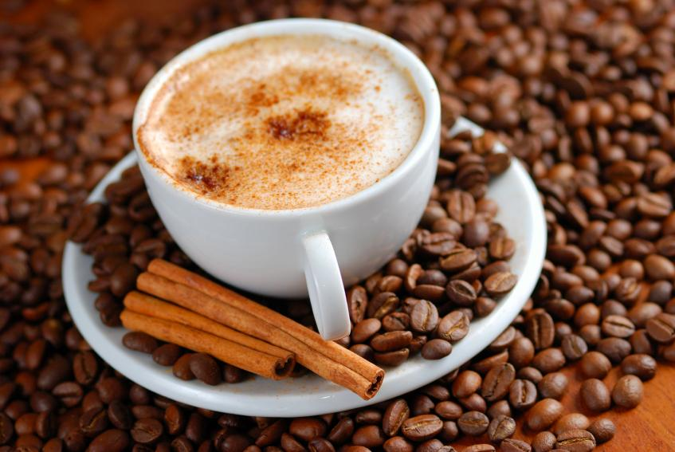

Toggle navigation
HOME
About
Contact
Pilihan Menu
Menu Makanan
Menu Minuman
Oleholeh Khas Sunda
Blog
Blog Home 1
Blog Home 2
Blog Post
Menu Minuman
Restoran 'Oleholeh' Sunda
Home
Menu Minuman
Bajigur
Rp 10.000,-
Add to chart
Es Cendol
Rp 15.000,-
Add to chart

Es Cincau
Rp 15.000,-
Add to chart
Es Jeruk
Rp 7.000,-
Add to chart
Es Teh Manis
Rp 5.000,-
Add to chart

Kopi
Rp 20.000,-
Add to chart
Jus Jambu
Rp 10.000,-
Add to chart
Jus Alpukat
Rp 10.000,-
Add to chart
Jus Mangga
Rp 10.000,-
Add to chart
«
1
2
3
»